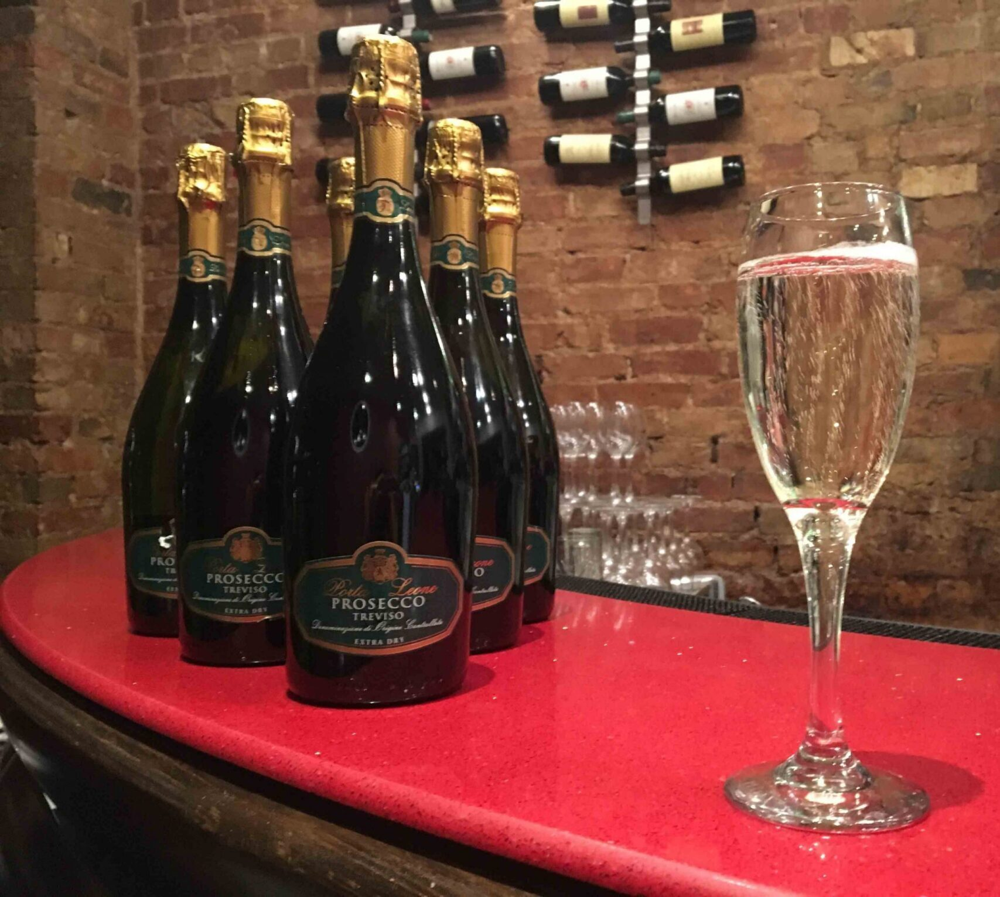
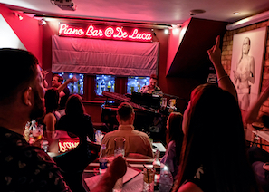
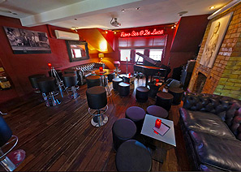

Valentine's Day Menu & Piano Bar Special
This Valentine's Day we pulled out all the stops — a specially crafted set menu in the Skylight Restaurant followed by an exclusive evening in the Piano Bar upstairs.
Guests enjoyed a three-course celebration menu featuring the finest seasonal ingredients: from handmade pasta and grilled sea bass to our signature tiramisu — all paired beautifully with our curated wine list.
The evening concluded in the Piano Bar, where our resident pianist set the mood for a night to remember. Live music, craft cocktails, and the warm glow of Cambridge's most romantic dining destination.
The Valentine's menu is now available to view — and if you missed it this year, watch our news page for upcoming special events throughout 2026.


